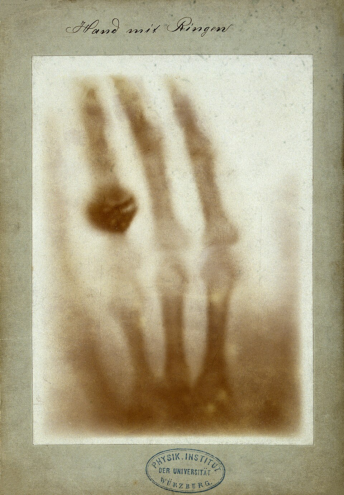

AI and the Human Body
How computers help doctors read X-rays, scans and heart signals
Every time you go to a hospital for a check-up, you leave behind data: a blood test, a recording of your heartbeat, or an X-ray of a sprained ankle. For a long time, only trained specialists could go through these results one by one. Today, machine learning is used in hospitals to help check medical images and signals much faster.

Turning the body into numbers
When Wilhelm Röntgen took the first medical X-ray of his wife's hand in 1895, the image was burned onto a glass photographic plate. A computer could not do anything with that. Before software can help a doctor, a measurement from the body has to be turned into digital numbers.
Modern hospital scans such as X-rays, CT scans and MRIs are saved directly as digital pictures made of thousands of pixels, where each pixel has a number for its brightness. Heart monitors (ECGs) work in a similar way by recording the electrical activity of the heart as a graph of numbers over time.
Once a scan or a heartbeat recording is just numbers, it can be used to train a machine learning model in three basic steps:
- Collect examples: researchers gather thousands of past scans where doctors already know the real diagnosis.
- Find patterns: the model compares healthy scans with sick ones and learns which pixel patterns usually appear in each group.
- Test on new scans: when a new patient comes in, the program checks the image and marks areas that look suspicious.
Where it is actually used
One of the most common places to find AI in a hospital is the radiology department. A single CT scan is not just one flat picture, but hundreds of cross-section slices stacked together. Going through all of them takes time, especially during a night shift. Software can scan those slices in a few seconds and put urgent cases, such as a possible brain bleed or a blood clot in the lungs, at the top of the doctor's list.
Another real example is eye screening for people with diabetes. High blood sugar can slowly damage tiny blood vessels at the back of the eye and cause blindness if nobody catches it early. Several clinics now use special cameras with built-in AI that take a photo of the retina and tell the nurse right away if the patient needs to see an eye specialist.
Why it cannot replace a doctor
Even when an algorithm is fast at spotting a shadow on a lung scan, it does not actually know medicine. It only sees the pixels in front of it. It does not know if the patient has a fever, if they had pneumonia five years ago, or what medication they are taking.
Models can also get confused when moved to a new place. A system trained on X-ray machines in one big hospital might make more errors when used in a smaller clinic with different equipment. That is why medical AI works as a second check to save time, while the real decision always stays with the doctor.
Sources & Image Credits
- Image Credit: Wilhelm Röntgen (1895), First medical X-ray of Anna Bertha Ludwig's hand (Public Domain, via Wikimedia Commons) - https://commons.wikimedia.org/wiki/File:First_medical_X-ray_by_Wilhelm_R%C3%B6ntgen_of_his_wife_Anna_Bertha_Ludwig%27s_hand_-_18951222.jpg
- NIH / NIBIB - Artificial Intelligence in Medical Imaging: https://www.nibib.nih.gov/science-education/science-topics/artificial-intelligence-ai
- U.S. FDA - AI-Based Device to Detect Diabetes-Related Eye Problems: https://www.fda.gov/news-events/press-announcements/fda-permits-marketing-artificial-intelligence-based-device-detect-certain-diabetes-related-eye
- Wikipedia - Artificial Intelligence in Healthcare: https://en.wikipedia.org/wiki/Artificial_intelligence_in_healthcare